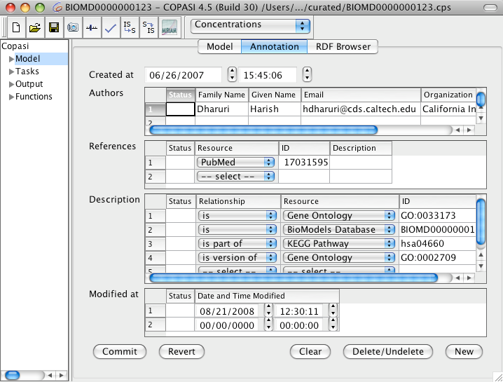

Sometimes it would be beneficial to include additional information in a model that describes the model creation process or that gives biological information about the individual model elements. Especially when you get a model from someone or load some published model from the authors Website or some model repository, this information sometimes comes in handy.
In order to standardize the process of model annotation, the
MIRIAM (Minimal Information Requested in the Annotation of biochemical Models) guidelines have been developed at the EBI in Hingston. These guidelines specify what information is needed to create properly annotated models that are suitable for publication.
Current versions of COPASI allow the user to annotate the model and all model elements according to the MIRIAM guidelines. For this, the model widget, as well as the widgets for the compartment, the species, the reaction and the global quantities have two additional tabs at the top of the widgets. One tab is called Annotation the other tab is called RDF Browser.
|  |
| Annotation Widget with Annotation from Model 123 from biomodels.net Database |
Before you use the annotation feature for the first time, you have to update the MIRIAM annotation that COPASI uses to create the list of resources that can be associated with an element. You update the list by pressing the the update MIRIAM button in the toolbar. Pressing this button triggers the download of the MIRIAM resources from the internet, so this will only work if you are connected to the internet (once this is done, you should restart COPASI).
COPASI (as well as SBML) use RDF (Ressource Description Framework) to store the annotation in the model file. To view the resulting RDF tree, you can select the RDF Browser tab. This is purely for displaying and not for editing. You will probably not look at this information very often.
If you select the Annotation tab, the same annotation is presented in a more user friendly way. There are different pieces of information that can be given for a certain model element, e.g. the author you added the element or created the model or for species some biological information to the identity of the species.
Each piece of information is stored as a triplet that is composed of the relationship, the resource for that relationship and the corresponding id. The relationship can be chosen from a limited set of relationships. The same goes for the resource. E.g. if you want to specify that species A in the model corresponds to ATP, the relationship would be set to
is and the resource could for example be the
ChEBI (Chemical Entities of Biological Interest) dictionary. The id would then be the ChEBI identifier for ATP, which is
CHEBI:A15422.
The COPASI GUI allows the user to store more information than the MIRIAM guidelines for SBML allow, so if you export your model to SBML after annotating it, some information might not be available for other SBML tools.
There is also a
page on the COPASI Website that has some more technical details about the way annotations are stored in COPASI.